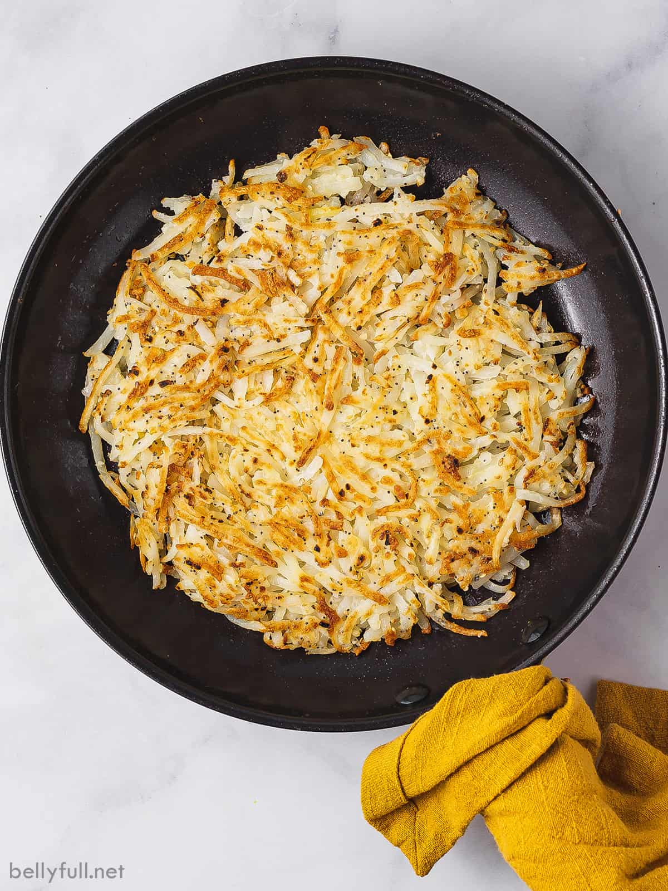

Hash Browns

Description
Hash browns are a classic breakfast staple that go well with eggs,
waffles, pancakes, steak, and much more. They are also super easy
to make and enjoy in the comfort of your own home!
Ingredients
- 3 tbsp Extra Virgin Olive Oil
- 1 lb Potatoes of your choice
- Salt and Pepper
Instructions
- Grate the potatoes. Peeling the potato is up to preference.
- Squeeze out as much moisture as you can from the potato with
a ricer, cloth, or paper towel.
- Heat the oil on a large skillet. Add the potatoes and sprinkle
some salt and pepper.
- Check the underside of the hash brown to see if they are golden brown.
Flip if they are and cook other side until golden brown.
- Enjoy!
Return to home page